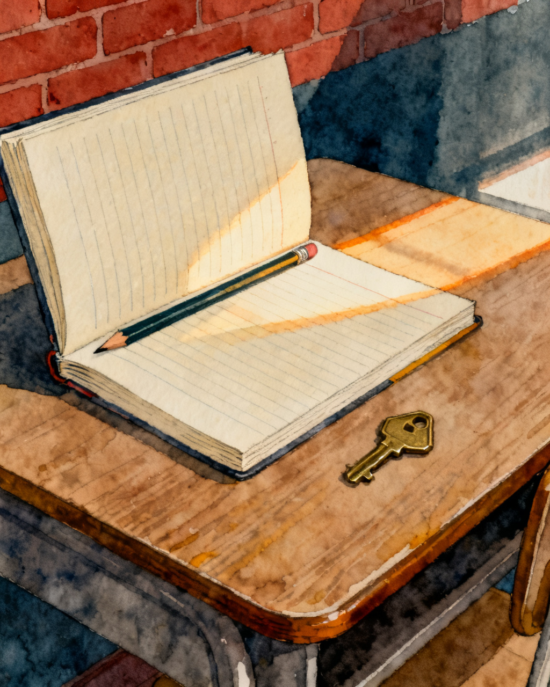

Creative writing · Lesson 1
Six Little Stories
Five stories before you write one.

Creative writing · Lesson 1
Five stories before you write one.
No corrections. No red pen. Nothing goes in the book.
Schools all over the world teach creative writing.
Because it builds the highest kinds of thinking.
Bloom’s taxonomy
Today, we learn to do it in an organised and interesting way.
1
Five stories, six words each
Seven minutes. Bad ones allowed.
2
One of them, grown
About fifty words. One paragraph.
3
Two people hear it
They each say one thing they saw.
By the end, you will have written a story and heard it read back.
A whole story, in six words.
For sale: baby shoes, never worn.
Class trip. I stayed on the bus.
The dog knew before we did.
The first is usually credited to Ernest Hemingway.
Find all three in the stories above.
A person — someone it happens to.
2A turn — something changes, and usually not for the better.
3A gap — what the writer leaves out. The reader fills it in.
Take one thing from each column and put them together.
A thing
a single glove
a house key
a cracked watch
A place
the back of the bus
a lost property box
the car park at night
A person
the quiet one
the new student
the brother who left
Short, strange, unfinished. Bad ones are fine — you are looking for one worth growing.
Go.
Now take one and grow it.
1
One person
Who they are, and what they want.
2
One place
Where we are standing. One room is enough.
3
One thing goes wrong
In the next minute, not next week.
About fifty words. One paragraph.
Finish the paragraph. Leave the spelling for the editing lesson.
Go.
A story is finished when somebody else has heard it.
They warn you not to walk through the wood alone. I go every Thursday, with a basket for my grandmother. Last Thursday a wolf fell into step beside me and asked where I was going. I told him, although he had already guessed. By the time I reached the cottage he had got there first. Her voice was wrong: too low, too close. I asked about his eyes. I asked about his teeth. ‘The better to eat you with,’ he said. ‘Not yet,’ I said, and stepped back out, pulling the door shut. I bolted it from the outside and sat on the step until the shouting stopped. I still go every Thursday. The basket is for him now.
Listen to it read aloud.
1Listeners close their eyes.
2Read it out loud, slowly.
3Then say nothing at all.
4Each listener says one thing they saw.
One thing you saw. Not whether you liked it.
A story works when you see something. ‘I liked it’ doesn’t tell the writer what you saw; ‘I saw the basket on the step’ does.
1Beginning — someone, somewhere, one odd detail.
2Build-up — something starts to be wrong.
3Problem — the thing they cannot ignore.
4Problem solved — they do something about it.
5Ending — what it cost, or what they never found out.
Which beat is this? Say it before it appears.
The story you would write next. One sentence.
Say it to the person beside you.
The next one is easier.